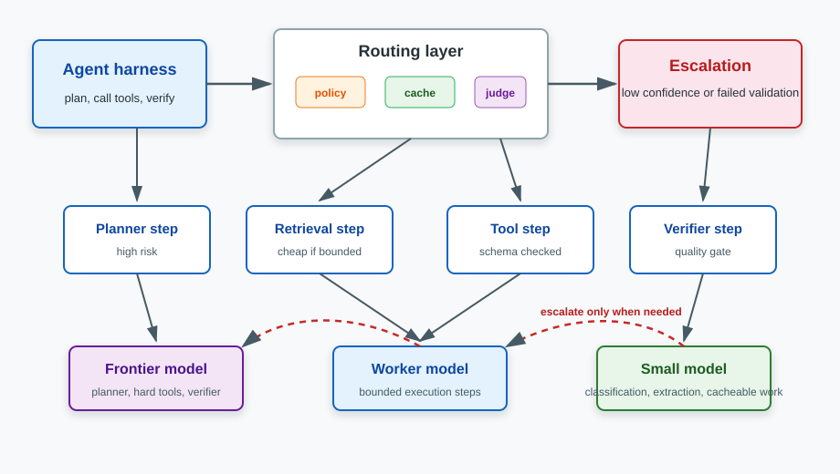

Model Routing for AI Agent Fleets: Cascades, Caches, and Cheap Worker Models
Most teams start routing models after the bill hurts. That is late, but understandable. A single chat endpoint can hide model cost for a while; an agent fleet cannot. Every task becomes a chain of planner calls, tool calls, retrieval calls, verifier calls, retries, and sometimes subagents. Model choice stops being a parameter and becomes architecture.
The trap is routing every "easy" step to the cheapest model and calling the savings done. Agents punish that shortcut. One cheap planner mistake can poison ten later steps. One malformed tool argument can look inexpensive right up to the point where the agent spends the next five minutes repairing its own mess.
TL;DR: Use the smallest model that clears the quality bar for that step, but measure the full trajectory. Start with a static planner/worker/verifier split, add validation-triggered cascades, then learn a router only after you have trace data. Caching and batching stack with routing, but they do not replace evals.
Runnable demo
I included an offline demo in this repo: work/demo/2026-06-11-model-routing-cascades/. From that directory, run:
uv run demo.py
It compares an all-frontier baseline, a static planner/executor split, and a confidence cascade on 30 synthetic tool-using tasks. No API keys, paid services, Docker, or model downloads required.
The routing question changes for agents
A normal LLM application asks one main question: "Which model should answer this request?"
An agent asks a messier question: "Which model should handle this step, given what happened earlier, what can fail next, and how expensive recovery will be?"
That distinction matters because agent runs are trajectories, not rows. A retrieval step can be cheap because it is bounded and easy to verify. A planner step is different. If the plan is wrong, every downstream model call is now optimizing against the wrong target. A verifier step is different again: it may be short, but it decides whether the agent exits, retries, escalates, or asks a human.
The useful mental model is a three-plane architecture:
| Plane | Job | Default model choice | Why |
|---|---|---|---|
| Planner | Break the task into steps and update the plan | Frontier or strong reasoning model | Planner errors compound through the whole run |
| Worker | Execute bounded retrieval, extraction, classification, and tool steps | Small or mid-tier model | The output is constrained and easy to validate |
| Verifier | Check final answer, schema, tool result, or task completion | Frontier, judge, or specialized verifier | False passes are more expensive than false retries |
This is why plan-and-execute agents are a natural fit for heterogeneous models. LangChain's original plan-and-execute write-up framed the pattern as a planner plus one or more executors. It also named the downside: more model calls. Model routing is how you stop that extra call count from turning into an extra bill.

Four routing patterns that are actually useful
1. Static role routing
This is the first version I would ship.
Write down the agent step types, assign a model tier to each one, and make that table explicit in code. Planner and verifier go to the stronger model. Extraction and classification go to a smaller model. Tool calls go to the cheapest model that can reliably emit valid arguments.
Static routing is boring, which is exactly why it is useful. You can explain it in a PR. You can audit it from traces. You can compare it against an all-frontier baseline without arguing about router training data.
The failure mode is also clear: static routing cannot see task difficulty. A simple planner step and a brutal planner step hit the same model. That is fine for version one. It becomes expensive or brittle once traffic diversifies.
2. Capability routing
Capability routing adds a classifier before the model call. The classifier might use task type, required tools, context length, language, latency budget, customer tier, data sensitivity, or output schema.
This works best when the routing features are objective. "Needs vision" is objective. "Needs 200k context" is objective. "Looks hard" is not, unless you can calibrate it against outcomes.
Commercial gateways help with the infrastructure side. OpenRouter provider routing exposes provider-selection controls and model fallbacks. LiteLLM Router supports weighted, latency-based, rate-limit-aware, least-busy, and cost-based routing, with separate fallback behavior. Those tools are useful, but most of them route availability, latency, provider, or model group. They do not know whether your agent's planner step is about to ruin a customer workflow.
3. Confidence cascades
A cascade starts cheap, checks the result, and escalates only when the result looks risky.
The check can be:
- schema validation failed;
- tool-call arguments failed a dry run;
- verifier score below threshold;
- low logprob on a classification label where logprobs are available;
- disagreement across self-consistency samples;
- task-specific rule failed, such as "the SQL query must be read-only."
The important part is that the escalation signal has to be about the step's job. A generic "the model says it is confident" flag is weak. A failed JSON schema, invalid SQL parse, missing citation, or violated permission rule is much stronger.
OpenAI's logprobs cookbook shows the classic classification use: set confidence thresholds and route uncertain outputs for review or fallback. The self-consistency paper gives another family of signals: sample multiple reasoning paths and look for agreement. For agents, I prefer deterministic validators first. They are cheaper and less suggestible.
4. Learned routers
Learned routers make sense once you have enough labeled traffic.
RouteLLM trains routers from preference data to choose between a stronger and weaker model at inference time. The paper reports roughly 2x cost savings on its benchmarks with minimal quality loss. FrugalGPT goes further into cascades and reports up to 98% cost reduction under its experimental conditions while matching the best individual model.
Those numbers are real, but they are not promises for your agent. They come from benchmark conditions, model pairs, and task distributions. In production, the router has to answer a harder question: "Will the whole trajectory still succeed if this step goes cheap?"
That is why I would not start with a learned router. Start with traces. Label failures. Build a baseline. Then train or buy a router with a target that matches your product metric.
Caching and batching are separate levers
Routing chooses the model. Caching avoids recomputing repeated work. Batching buys cheaper asynchronous throughput. They stack, but they solve different problems.
| Lever | Best for | Practical catch |
|---|---|---|
| Exact cache | repeated prompts, tool schemas, deterministic extraction | cache invalidation and tenant boundaries |
| Semantic cache | repeated intents with different wording | false hits are quality bugs, not just cache bugs |
| Prompt caching | long stable prefixes, tool definitions, policy text | provider-specific rules and cache lifetimes |
| Prefix/KV caching | self-hosted models with shared prefixes | needs serving-layer support and stable prefix layout |
| Batch API | offline evals, labeling, report generation | not for interactive agent steps |
Provider docs are worth reading here because the details change. OpenAI's prompt caching guide says caching is automatic and can reduce latency and input-token cost for repeated prefixes. Anthropic's prompt caching docs expose explicit cache write/read economics: cache reads are priced at 0.1x base input tokens, while writes cost more than a normal input. OpenAI's Batch API gives a 50% discount for asynchronous work that can complete within 24 hours. For self-hosted models, vLLM's automatic prefix caching reuses KV cache blocks when requests share the same prefix.
The agent-specific move is to make prompts cacheable on purpose. Keep policy text, tool schemas, and stable instructions at the front. Put volatile task data later. If every step starts with a different giant preamble, you defeated the cache before the provider saw the request.
A small benchmark: all-frontier vs split vs cascade
The companion demo is intentionally synthetic. It is not trying to prove that one vendor model beats another. It proves the accounting shape.
The benchmark creates 30 tasks. Each task has four steps:
- planner;
- retrieval;
- tool call;
- verifier.
Each strategy sees the same tasks. The all-frontier baseline sends every step to the strongest model. The planner/executor split sends planner and verifier steps to the frontier model, while retrieval and tool steps use a worker model. The confidence cascade starts cheaper, checks confidence and validation risk, then escalates uncertain planner, tool, and verifier steps.
The relevant code is in work/demo/2026-06-11-model-routing-cascades/demo.py:
def confidence_cascade(step: AgentStep) -> StepResult:
first = WORKER if step.kind in {StepKind.PLAN, StepKind.TOOL} else SMALL
first_success, first_cost, first_latency = run_model(first, step, cache_hit=step.task_id > 1)
should_escalate = (not first_success) or confidence(first, step) < 0.62
if not should_escalate:
return StepResult("confidence_cascade", step, first, True, False, first_cost, first_latency)
fallback = FRONTIER if step.kind in {StepKind.PLAN, StepKind.TOOL, StepKind.VERIFY} else WORKER
final_success, fallback_cost, fallback_latency = run_model(fallback, step, cache_hit=step.task_id > 1)
return StepResult(
"confidence_cascade",
step,
fallback,
final_success,
True,
first_cost + fallback_cost,
first_latency + fallback_latency,
)
On my run:
| Strategy | Task success | Step success | Total cost | Savings vs all-frontier | Mean latency | Escalation |
|---|---|---|---|---|---|---|
| All frontier | 100% | 100% | $0.4297 | 0.0% | 1061 ms | 0% |
| Planner/executor | 70% | 92% | $0.2846 | 33.8% | 729 ms | 0% |
| Confidence cascade | 100% | 100% | $0.1849 | 57.0% | 634 ms | 35% |
The static split saved money but lost task success. That is the part people miss. A 92% step success rate sounds fine until you remember that task success is multiplicative. Four-step tasks make that visible. Longer agent runs make it brutal.
The cascade spent extra money on failed cheap attempts, but it recovered risky steps before they broke the task. That is the routing shape I want in production: cheap by default where validation is strong, expensive when uncertainty is high, and measured at the trajectory level.
Where 90% savings are plausible
Ninety percent savings is plausible in some workloads. It is not a universal target.
It is plausible when:
- most steps are short, bounded, and easy to validate;
- the expensive prompt prefix is stable enough for caching;
- many calls can move to batch processing;
- the frontier model is reserved for planner, verifier, and escalation steps;
- the eval harness catches regressions at task level.
It is not plausible when:
- every step needs frontier reasoning;
- output tokens dominate cost and cannot be shortened;
- tasks are interactive and cannot use batch discounts;
- context changes on every call, defeating prompt caching;
- there is no verifier strong enough to detect cheap-model failures.
This is also why live provider pricing pages matter more than blog-post arithmetic. OpenAI, Anthropic, Google, and DeepSeek all expose different input/output/cache/batch economics on their current pricing pages. The spread is large enough to justify routing work. The details are volatile enough that hardcoding a strategy from today's table is lazy engineering.
Failure modes
Cheap errors compound
If the worker model extracts the wrong entity, the planner may build the wrong next step. If the tool model emits the wrong argument, the verifier may evaluate the wrong artifact. You cannot look only at per-call accuracy. Agent evals need task-level success, step-level diagnosis, and cost per successful task.
Routing flaps
A router that changes its mind around a threshold can create noisy traces and unstable quality. Add hysteresis: once a session escalates a step type for a task, keep that tier for related steps unless a stronger signal says otherwise.
Fallbacks hide quality bugs
Provider fallbacks are good for outages and rate limits. They are not the same thing as quality cascades. If a fallback fires after a provider error, you know the first call failed technically. If a cheap model returns a plausible but wrong tool call, the provider layer may see success. Your harness has to catch that.
Semantic caches can return confident wrongness
Semantic caches are tempting for support bots and repetitive analysis tasks. They are also dangerous for agents because small input differences can change which tool is safe to call. Use semantic caches for low-risk reads first. Avoid them for permissioned actions unless the cache key includes the relevant policy and tenant context.
Learned routers can be attacked or drift
Routers are control planes. The Rerouting LLM Routers paper is a useful warning: router behavior itself can become a robustness problem. If your router learns that certain phrasing is "easy," users or upstream systems can accidentally or deliberately push hard tasks into cheap paths.
Implementation checklist
Start simple:
- Define agent step types: planner, retriever, extractor, tool caller, verifier, summarizer, reporter.
- Add model tier, prompt tokens, output tokens, latency, cache hit, validation result, and final task outcome to every trace.
- Build an all-frontier baseline for a fixed eval set.
- Add a static routing table and compare cost per successful task.
- Add deterministic validators before LLM judges: schema checks, parser checks, permission checks, unit tests, SQL dry runs.
- Add cascades where validators are strong.
- Add prompt caching and batch jobs where the workload actually fits.
- Train or buy a learned router only after you have enough labeled traces to evaluate it.
The metric I care about is not "average cost per call." It is cost per successful task at a fixed quality bar. A router that cuts cost by 70% and drops task success by 20 points is not an optimization. It is a cheaper way to fail.
Key Takeaways
- Model routing for agents is a trajectory problem. Optimize per-step cost only after you can measure task-level success.
- Planner, worker, and verifier roles are the simplest useful split. Start there before training a router.
- Cascades work when escalation signals are concrete: schema failures, tool validation errors, verifier scores, logprob thresholds, or self-consistency disagreement.
- Caching and batching stack with routing, but they do not decide whether a cheap model is safe for a step.
- The right dashboard is cost per successful task, not cost per model call.
References
- RouteLLM: Learning to Route LLMs from Preference Data
- RouteLLM GitHub repository
- FrugalGPT: How to Use Large Language Models While Reducing Cost and Improving Performance
- LangChain: Plan-and-Execute Agents
- OpenAI: Using logprobs
- Self-Consistency Improves Chain of Thought Reasoning in Language Models
- OpenAI: Prompt caching
- Anthropic: Prompt caching
- OpenAI: Batch API
- vLLM: Automatic Prefix Caching
- OpenRouter: Provider selection
- OpenRouter: Model fallbacks
- LiteLLM: Router
- LiteLLM: Fallbacks
- Martian: Introducing RouterBench
- Rerouting LLM Routers